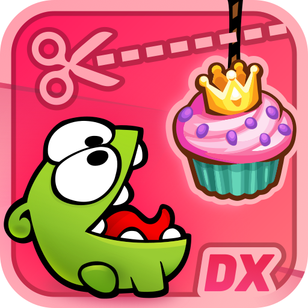

Loading…
Taking too long? You might want to check your internet speed, or reload the page.
This build needs cross-origin isolation, which this page did not get. Reload once; if it keeps happening, the server is not sending the COOP and COEP headers the game requires.
The graphics context was lost. Reload this page to restart the game.